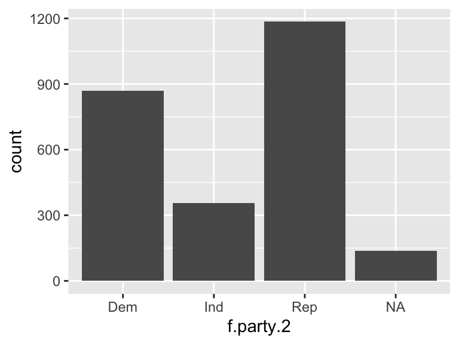
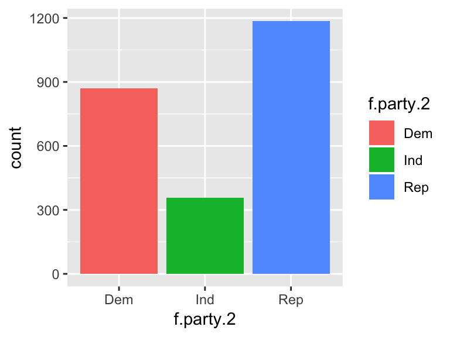
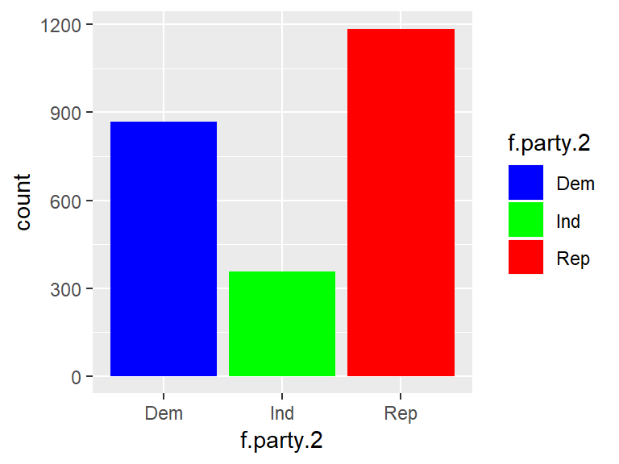
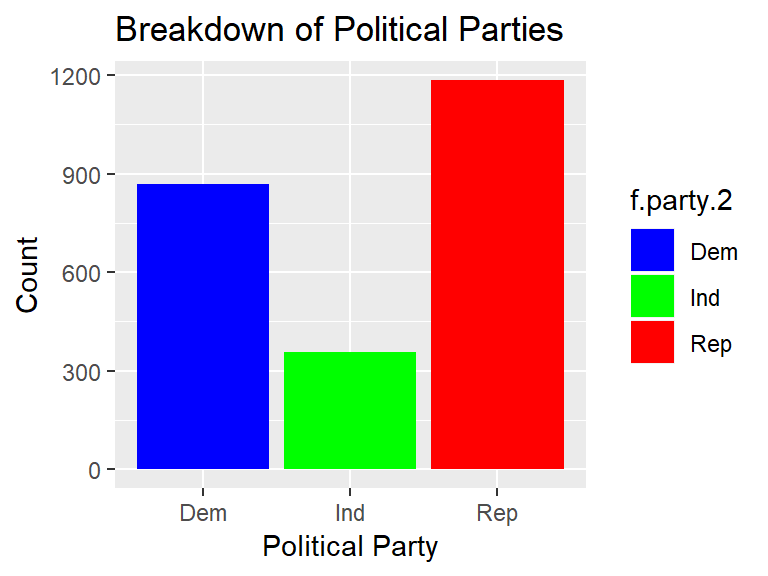
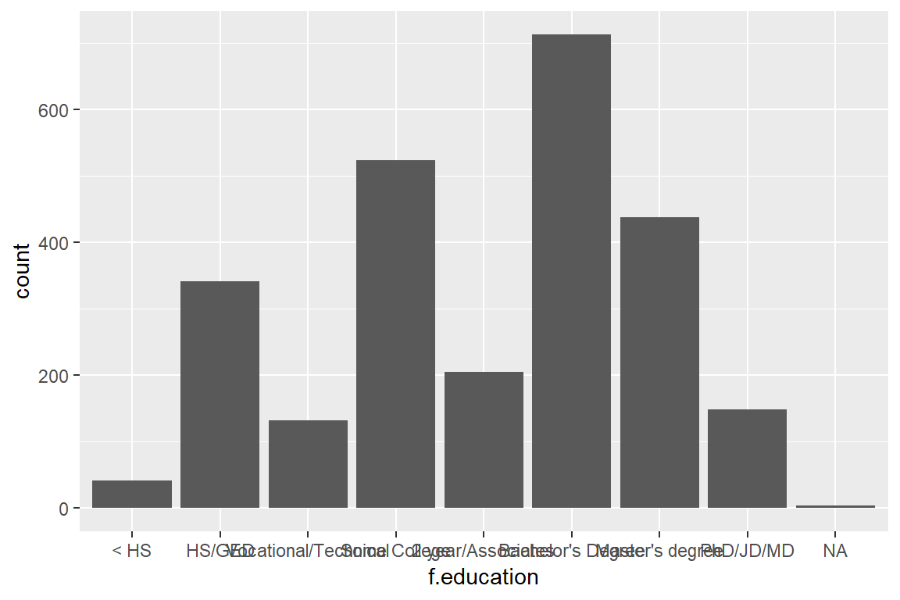
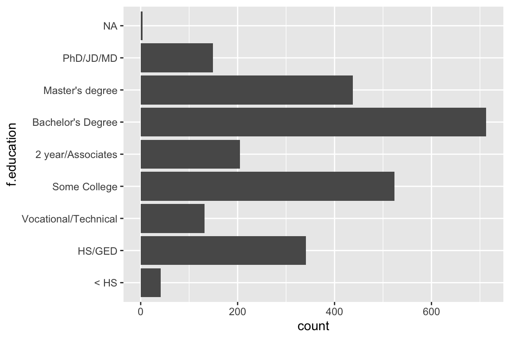
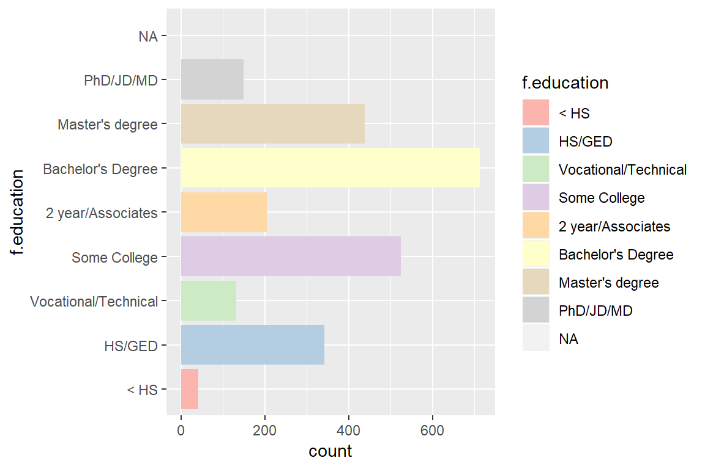
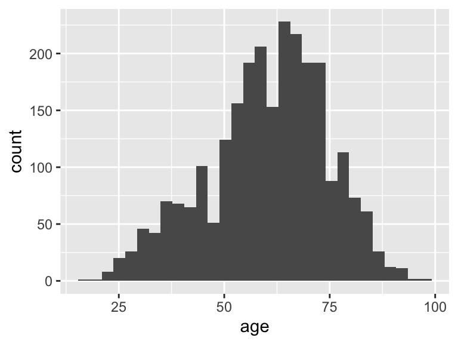
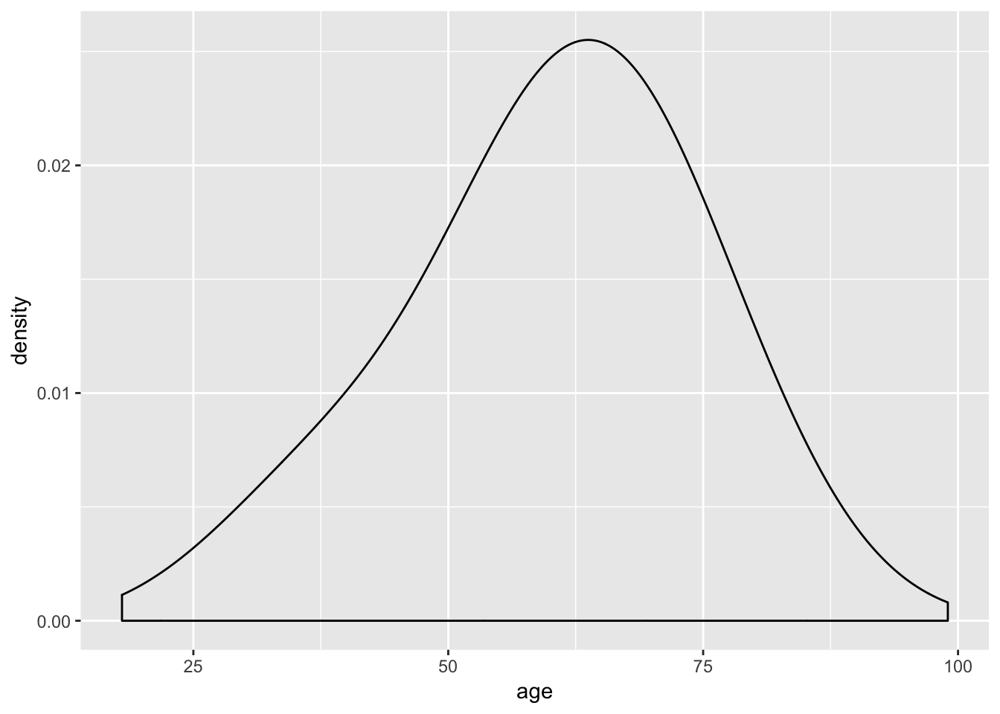
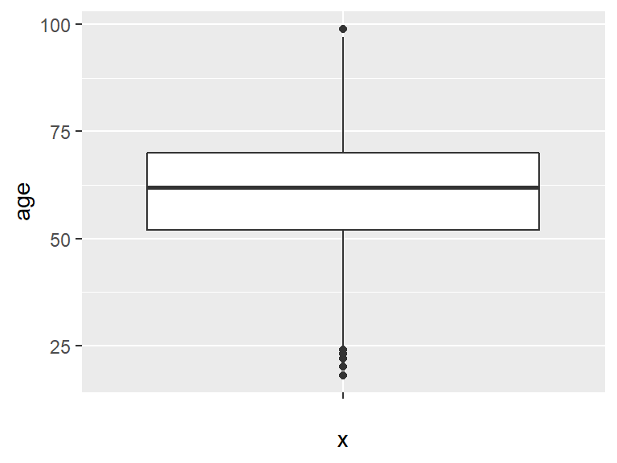

3 Formatting, Describing, and Visualizing Data
This lab discusses the basics of formatting, describing, and visualizing data. The following packages are required for this lab:
- car
- reshape2
- descr
- psych
- tidyverse
- skimr
Reminder: Lab One introduced how to install packages via the install.packages() function.
Note: These packages should already be installed from the class initialization script.
The installed packages require loading at the beginning of a R session. Remember that this can be done via the library() command.
3.1 Factoring
The previous lab introduced several types of objects in R. For the purpose of this lab, objects are classified into two broad groups: factors and numerics.
Factors are nominal data that a label is applied to. - e.g., race, gender, party identification, etc.
Numerics are data consisting of numbers, which are ranked (ordinal and interval).
When data is read into R (e.g., by importing a .csv file), R automatically classifies the data by type. When data is recognized as non-numeric, R will classify it as a factor.
In the class dataset, the variable f.party.2 is a variable consisting of factors that identifies the party affilation of the individuals who answered a survey. The table() function describes the variable by category.
##
## Dem Ind Rep
## 869 356 1185Attempting to take mean of the f.party.2 variable inevitably fails.
## Warning in mean.default(ds$f.party.2): argument is not numeric or logical:
## returning NA## [1] NAParty affiliation is nominal data that cannot be described via mean. Consequently, R will error when attempting to calculate the mean or median for factor variables.
The str() function describes the structure of the f.party.2 variable:
## Factor w/ 3 levels "Dem","Ind","Rep": 3 1 3 NA 3 2 1 3 3 NA ...The f.party.2 variable is a factor with three levels: “Dem”, “Ind”, and “Rep.”
With many data sets, data are initially coded in numbers and factored afterwards. For example, the party variable in the ds data set is numeric:
##
## 1 2 3 4
## 869 1185 356 91Without a codebook to decipher the numeric values, statisticians are unable to explain what 1, 2, 3, or 4 represent within the ds data set. Factoring data remedies this issue. Factoring data in R serves two broad purposes:
- Applies labels to data
- Tells R to treat the data as categorical/nominal
At a very basic level, a variable can be factored without applying labels. At minimum, R will treat the data as categorical. This method is sufficient when a variable requires quick factoring. The basic syntax is to use the factor() function.
Note: Best practice for factoring an existing variable is to create an additional variable within the same data set. Best practice then suggests to append the new variable with f. to indicate the variable is factored.
Reminder: The $ sign shows R which data set to draw the variable from, or to tell R what data set to assign the new factored variable to. The new factored variable can be described via the table() function.
##
## 0 1
## 1520 1026While this factored variable is split into two categories, it is not apparent which numbers represent male and female. Labels should be assigned to the numbers to clarify the relationship between the numbers and their meaning. When factoring a variable, R requires the number of levels within the variable and the corresponding labels. In the f.gender variable there are two levels, 0 and 1, that require women and men labels.
##
## Women Men
## 1520 1026The vector function, c(), tells R the levels and labels of the variable.
The f.party variable should also be factored, where 1 = Dem, 2 = Rep, 3 = Ind, and 4 = Other, and a table of the variable should be created.
ds$f.party <- factor(ds$party, levels = c(1, 2, 3, 4),
labels = c("Dem", "Rep", "Ind", "Other"))
table(ds$f.party)##
## Dem Rep Ind Other
## 869 1185 356 91The structure of the f.party variable describes a factor with four levels.
## Factor w/ 4 levels "Dem","Rep","Ind",..: 2 1 2 NA 2 3 1 2 2 4 ...There are other types of data conversions as well. In most cases, the basic syntax is the same as the factor() function, except the function names are numeric() or integer().
Note: For most purposes, numeric and integer are the same.
3.1.1 Coerce Factoring
Sometimes the typical commands do not work and variables must be coerced. When a variable is coerced, R is instructed to treat the variable as if it were a different object type. The coercive functions are:
as.factor()as.numeric()as.integer()
Try it! Convert a factor variable into a numeric variable using the numeric() function.
This fails, so the coerce function should be employed.
Examine the new variable with the table() and str() functions.
##
## 1 2 3 4
## 869 1185 356 91## num [1:2547] 2 1 2 NA 2 3 1 2 2 4 ...3.2 Recoding
In R, the recode() function recodes values within a variable. There many reasons to recode a variable, including:
- To correct or change incorrect data.
- To restructure data, making it easier for calculations.
- To emphasize some intended effect.
For example, a recode is necessary to look at age groups instead of exact ages. If everyone in the survey reported their exact age (e.g., 54, 23, etc.) and age groups are necessary (e.g., 18-25, 26-35, etc.), the recode() function is useful.
To perform a recode, follow this basic syntax: recoded.variable <- recode(old.variable, "recode commands")
Performing a recode is best demonstrated via example. The best practice for recoding variables suggest creating a new variable with a r. prefix.
Within the class data set is an ideol variable describing ideology. Currently, the ideology variable goes from 1 to 7, with 1 being very liberal and 7 being very conservative. The ideology variable can be recoded from seven levels to three, liberal, moderate, and conservative, via the recode() function. Values from 1 to 2 will recode as 1, 3 to 5 will recode as 2, and 6 to 7 will recode as 3. This recode() function is provided by the car package.
The table() function describes the result of recoding the ideol variable.
##
## 1 2 3 <NA>
## 401 1084 1039 23Note: else = NA; NA = NA is included at the end of the recode function. This instructs R to regard any other responses, whether missing data or data that for some reason is outside the original range, as NA, and to treat all existing NAs as NAs. Sometimes -99 = -99 or -99 = NA requires inclusion in the function as well.
Note: In the recode function, all the recode arguments are required inside one set of quotation marks. Each argument is separated with a semicolon. R will generate an error message if commas are used.
Using colons to define ranges will save time. In the recode() function, using 3:5 = 1 instructs R to recode all values between 3 and 5 to a 2. This is the preferred method opposed to typing 3 = 2; 4 = 2; 5 = 2.
There is no standard method to categorize or recode data. Let the research question, model design, and data determine the best approach to recoding. For example, in surveys that ask individuals to support something on a scale of 1 to 4, with 1 as very supportive and 4 as least supportive, perhaps recoding the higher value to indicate greater support is appropriate.
Now let’s look at the race variable:
##
## 1 2 3 4 5 6 7
## 2227 79 119 10 2 76 23In the ds data set, the race variable consists of codes: 1 for Caucasian, 2 for African-American, and 3 through 7 for a variety of other races (Native American, Asian, Pacific Islander, 2+ races, and Other).
Try it! Recode this variable to go from 7 levels to 3, where 1 is still Caucasian, 2 is African American, and 3 includes all others.
##
## 1 2 3
## 2227 79 2303.2.1 Factoring and Recoding
Factoring a variable is generally easier subsequent to recoding. Given the race variable now consists of 3 levels instead of 7, factoring will add meaningful words in place of the values. The values 1, 2, and 3 can be factored as White, African-American, and Other, respectively.
ds$f.race.2 <- factor(ds$r.race, levels = c(1, 2, 3),
labels = c("White", "African-American", "Other"))
table(ds$f.race.2)##
## White African-American Other
## 2227 79 230The same can be done with the ideol variable. The values 1, 2, and 3 can be factored as Liberal, Moderate, and Conservative, respectively.
ds$f.ideol <- factor(ds$r.ideol, levels = c(1, 2, 3),
labels = c("Liberal", "Moderate", "Conservative"))
table(ds$f.ideol)##
## Liberal Moderate Conservative
## 401 1084 10393.2.2 Creating a Dummy Variable
Factoring and recoding permit the creation of dummy variables. A dummy variable is a binary indicator (0 or 1) of some category, to test for an effect from a particular category. Dummy variables are prominent in political science, so it is imperative to understand how to create and use them.
A dummy variable will be created with the recoded race variable to indicate whether the respondent identified as African-American (1) or not (0). Recall that in the r.race variable, African-American is coded as 2.
##
## 0 1
## 2468 79The newly created dummy variable will now be factored to apply meaningful labels in place of the numbers.
ds$f.AfAm <- factor(ds$r.AfAm, levels = c(0, 1),
labels = c("Non African-American", "African-American"))
table(ds$f.AfAm)##
## Non African-American African-American
## 2468 793.3 Part III: Building and Sorting Your Data
In R, random data can be generated easily into objects and manipulated as desired. There are a variety of methods to accomplish this, the basics of which are explored below.
The rnorm() function generates n random values that fit a normal distribution, given a mean and standard deviation.
The previous code created three objects consisting of 100 random values with different means. The three objects can be combined into a single column using the cbind() function. The cbind() function will combine the given objects sequentially in a column in the provided order.
Alternatively, the rbind() function can combine the three objects into a single row. Similar to the cbind() function, the rbind() function will combine the given objects sequentially in the provided order.
3.3.1 The Tidyverse
The tidyverse is a collection of packages and functions for exploring and visualizing data in R. Developed by Hadley Wickham, the tidyverse packages provide a succint and consistent method of data exploration and visualization. There are plenty of different methods of working with your data, but this class will employ the tidyverse, as it is considered to be intuitive and rather simple.
Let’s begin with learning how to filter your data. Filtering allows you to create a subset of your data that meets specific criteria. For example, you could filter your data to examine only men, or only Republicans, etc. To filter data, use the filter() verb from the dplyr package. The tidyverse functions are best optimized by using the pipe operator, %>%, to pipe functions together. The pipe operator takes whatever is before it and sends it on to the next function. For example:
The code chunk above creates a subset of the data that only includes men. The syntax can be read as “First take the data set, then filter it to include men only.” We also assigned it to a new object, ds.men. The filter verb can include multiple specifications. You also do not have to always assign your filtered data to a new object. For example, suppose you wanted to examine women who are age 42. You can do so like this:
## X.1 X userid wave_id agescreen age gender education
## 1 202 2994 Ph-W202242 Wave 12 (Fall 2016) 1 42 0 6
## 2 483 7164 Ph-W211012 Wave 12 (Fall 2016) 1 42 0 5
## 3 514 7635 Ph-W302515 Wave 12 (Fall 2016) 1 42 0 6
## 4 651 9559 R2NM6835 Wave 12 (Fall 2016) 1 42 0 5
## adults children employment income footage ssn_precip ssn_tmp drghtfreq
## 1 2 3 1 86000 1400 1 3 2
## 2 3 1 4 120000 1100 1 3 2
## 3 2 1 4 90000 2800 2 3 2
## 4 2 0 4 95000 2100 2 3 3
## drghtsev fldfreq fldsev avgtmp tmpextrm evntexp_wind evntexp_drght
## 1 NA 1 1 2 2 0 0
## 2 2 2 1 3 3 0 0
## 3 1 2 1 NA NA 0 0
## 4 2 2 2 2 2 1 0
## evntexp_rain evntexp_cold evntexp_snow evntexp_ice evntexp_flood
## 1 0 0 0 0 0
## 2 0 0 0 0 0
## 3 0 0 0 0 0
## 4 0 0 0 0 0
## evntexp_torn evntexp_fire evntfreq_wind evntfreq_rain evntfreq_cold
## 1 0 1 2 2 2
## 2 0 0 2 1 1
## 3 0 0 2 2 2
## 4 0 0 2 2 2
## evntfreq_snow evntfreq_ice evntfreq_torn evntfreq_fire evntfutfreq_wind
## 1 2 2 1 3 2
## 2 1 1 2 1 2
## 3 2 2 2 2 2
## 4 2 2 2 2 2
## evntfutfreq_drght evntfutfreq_rain evntfutfreq_cold evntfutfreq_snow
## 1 3 1 2 2
## 2 3 3 1 1
## 3 2 2 2 2
## 4 2 2 2 2
## evntfutfreq_ice evntfutfreq_flood evntfutfreq_torn evntfutfreq_fire
## 1 2 2 2 NA
## 2 1 2 3 2
## 3 2 2 2 2
## 4 2 2 NA 2
## wtr_bill_totcost wtr_bill_dk wtr_use wtr_short mntain_lawn wtr_qual
## 1 156 0 2 0 1 3
## 2 200 0 2 0 1 3
## 3 0 0 2 0 1 3
## 4 86 0 2 0 1 2
## wtr_safe wtr_comm wtr_farm wtr_steps_flush wtr_steps_flow wtr_steps_bath
## 1 8 1 1 0 0 0
## 2 8 4 3 0 1 1
## 3 7 4 4 0 0 0
## 4 8 3 2 0 0 0
## wtr_steps_lawn wtr_steps_car wtr_steps_othr
## 1 1 0 0
## 2 1 0 1
## 3 0 0 0
## 4 0 0 0
## wtr_steps_spec enrgy_sourc_elec enrgy_sourc_natgas
## 1 <NA> 1 1
## 2 Use our sand point well to water 1 1
## 3 <NA> 1 0
## 4 <NA> 1 1
## enrgy_sourc_prop enrgy_sourc_wood enrgy_sourc_othr enrgy_sourc_othr_spec
## 1 0 1 0 <NA>
## 2 0 0 0 <NA>
## 3 0 0 0 <NA>
## 4 0 0 0 <NA>
## elec_bill_totcost elec_bill_dk elec_use elec_out gas_bill_totcost
## 1 207 0 1 0 60
## 2 100 0 2 0 50
## 3 300 0 2 1 NA
## 4 136 0 2 0 89
## gas_bill_dk gas_use enrgy_steps_lghts enrgy_steps_ac enrgy_steps_heat
## 1 0 1 1 1 1
## 2 0 1 1 1 1
## 3 NA NA 0 0 0
## 4 0 2 1 1 1
## enrgy_steps_savappl enrgy_steps_unplug enrgy_steps_insul
## 1 0 0 0
## 2 0 0 0
## 3 0 0 0
## 4 0 0 0
## enrgy_steps_savdoor enrgy_steps_othr enrgy_steps_othr_spec party
## 1 0 0 <NA> 4
## 2 0 0 <NA> 1
## 3 0 0 <NA> 2
## 4 0 0 <NA> 3
## party_spec lean ideol cncrn_secur cncrn_health cncrn_enrgy cncrn_trns
## 1 Libertarian NA 7 10 9 9 9
## 2 <NA> NA 4 8 9 6 5
## 3 <NA> NA 6 7 7 4 0
## 4 <NA> 1 2 8 8 4 8
## cncrn_tax cncrn_edu cncrn_econ glbwrm_ok time_outside spent_outside
## 1 7 10 10 0 1 2
## 2 10 10 10 1 2 2
## 3 8 5 6 0 1 3
## 4 9 9 9 1 2 2
## cmpr_time_outside hlth_status nghbrhd_deal nghbrhd_close nghbrhd_care
## 1 1 3 7 5 1
## 2 3 5 4 4 2
## 3 2 3 5 6 3
## 4 1 4 5 3 3
## nghbrhd_not nghbrhd_eyes nghbrhd_help wthr_info_paper wthr_info_web
## 1 1 7 7 Never Never
## 2 2 6 4 <NA> <NA>
## 3 2 6 2 Never Never
## 4 2 3 6 Never About once a day
## wthr_info_govweb wthr_info_loctv wthr_info_cabtv
## 1 Never Several times a day Less than once per week
## 2 <NA> Several times a day <NA>
## 3 Never About once a day Never
## 4 Never Less than once per week Less than once per week
## wthr_info_radio wthr_info_fam wthr_info_soc
## 1 Several times a day About once a day About once a day
## 2 Several times a day <NA> <NA>
## 3 Less than once per week Less than once per week Never
## 4 Less than once per week Several times a day Several times a day
## wthr_info_othr wthr_info_othr_spec dot_answr click_bluedot
## 1 <NA> <NA> NA 1
## 2 <NA> <NA> NA 1
## 3 <NA> <NA> 2 1
## 4 Never <NA> 1 0
## begin_datetime end_datetime is_statewide hispanic race race_spec
## 1 1481587679 1481588604 1 0 1 <NA>
## 2 1480998150 1481000446 1 0 1 <NA>
## 3 1481312462 1481755390 1 0 1 <NA>
## 4 1484166842 1484167687 1 0 1 <NA>
## evntexp_heat evntexp_ethqk evntfreq_heat evntfreq_ethqk evntfutfreq_heat
## 1 0 1 2 3 2
## 2 1 1 3 3 2
## 3 0 0 2 3 2
## 4 0 0 2 3 2
## evntfutfreq_ethqk wtr_steps_leaks wtr_steps_ldry enrgy_sourc_geo
## 1 3 0 0 0
## 2 3 0 0 0
## 3 2 0 0 0
## 4 3 0 0 0
## enrgy_steps_bulbs wthr_info_phone mntain_flwr mntain_veg glbcc
## 1 1 Several times per week 1 0 0
## 2 1 <NA> 1 1 1
## 3 0 Less than once per week 0 0 0
## 4 0 Several times a day 1 0 1
## glbcc_cert glbcc_risk is_payne is_okcity evntexp_hail evntfreq_hail
## 1 7 3 0 0 0 2
## 2 4 4 0 0 0 1
## 3 6 5 0 0 0 2
## 4 8 7 0 0 0 2
## evntfutfreq_hail wtr_freq cncrn_natres confirm_zip is_kiamichi
## 1 2 2 4 73078 0
## 2 3 4 6 74008 0
## 3 2 1 4 73053 0
## 4 2 2 6 73069 0
## is_washita is_canadian consent
## 1 0 0 Yes, I agree to participate in this study
## 2 0 0 Yes, I agree to participate in this study
## 3 0 0 Yes, I agree to participate in this study
## 4 0 0 Yes, I agree to participate in this study
## home_lot ethqk_risk ethqk_cause ethqk_risk_mgmt ethqk_risk_rand
## 1 2 7 3 8 regulating
## 2 2 5 2 7 regulating
## 3 3 3 1 3 managing
## 4 2 7 2 7 regulating
## ethqk_risk_fed_mgmt glbwrm_risk_rand glbwrm_risk_mgmt
## 1 0 managing 0
## 2 7 managing 4
## 3 3 managing 3
## 4 6 managing 7
## glbwrm_risk_fed_mgmt know_fire purp_fire
## 1 0 1 1
## 2 9 1 1
## 3 3 1 1
## 4 8 1 1
## purp_fire_exp
## 1 To burn away brush within a controlled area so as not to provide kindling for a future wild fire.
## 2 To burn the grass to decrease the risk of wildfires and new grass to grow in the spring
## 3 Usually it's done by farmers to burn off their field stubble. The ash is good fertilization, I've heard.
## 4 Used to get rid of something ie trash, brush, grass to either destroy it or may way for something else.
## useful_val_fire use_fire_rural nofire_notrain nofire_notnear nofire_othr
## 1 1 NA NA NA NA
## 2 1 NA NA NA NA
## 3 2 0 0 1 0
## 4 1 NA NA NA NA
## nofire_othr_spec urban_fire fire_implmnt okelec_foss okelec_nuc
## 1 <NA> NA 1 50 25
## 2 <NA> 0 1 70 10
## 3 <NA> NA NA 76 0
## 4 <NA> 1 1 25 25
## okelec_renew solar_prop heard_netmeter net_met_info ok_net_met vote
## 1 25 0 0 1 4 1
## 2 20 0 0 1 1 1
## 3 24 0 0 1 4 1
## 4 50 0 0 1 3 1
## vote_2016 vote_cand vote_cand_spec vote_cand_spt f.gender f.party
## 1 1 2 <NA> 3 Women Other
## 2 1 1 <NA> 2 Women Dem
## 3 1 0 <NA> 4 Women Rep
## 4 1 1 <NA> 2 Women Ind
## f.party.2 r.ind f.ind r.rep f.rep r.dem f.dem f.edu
## 1 <NA> 0 Non Ind 0 Non Rep 0 Non Dem Bachelor's Degree
## 2 Dem 0 Non Ind 0 Non Rep 1 Dem 2 year/Associates
## 3 Rep 0 Non Ind 1 Rep 0 Non Dem Bachelor's Degree
## 4 Ind 1 Ind 0 Non Rep 0 Non Dem 2 year/Associates
## f.race r.race f.race.2 r.white f.white r.AfricanAmer f.AfricanAmer
## 1 White 1 White 1 White 0 Non AfricanAmer
## 2 White 1 White 1 White 0 Non AfricanAmer
## 3 White 1 White 1 White 0 Non AfricanAmer
## 4 White 1 White 1 White 0 Non AfricanAmer
## r.age f.age f.age.2 r.ideology f.ideology f.glbwrm_ok n.party
## 1 3 41-50 (17.9,58.5] 3 Conservative No 4
## 2 3 41-50 (17.9,58.5] 2 Moderate Yes 1
## 3 3 41-50 (17.9,58.5] 3 Conservative No 2
## 4 3 41-50 (17.9,58.5] 1 Liberal Yes 3
## r.ideol f.ideol r.AfAm f.AfAm
## 1 3 Conservative 0 Non African-American
## 2 2 Moderate 0 Non African-American
## 3 3 Conservative 0 Non African-American
## 4 1 Liberal 0 Non African-American
## [ reached 'max' / getOption("max.print") -- omitted 14 rows ]Similar to filter(), you can use the select() function from the dplyr() package to create a new data set that includes a few variables of interest.
Note: select is a very common verb in R, and therefore is often masked by other packages. If you encounter an error when using select(), include dplyr:: before calling the function, so that R knows which version of select() to use. Follow it up by using na.omit() to remove missing observations:
The next verb is arrange(), which allows you to sort your data in ascending or descending order by a particular specification. Recall the previous code chunk where we filtered the data to include only women who are age 42. Adding another pipe operator, %>%, and arrange() will allow us to examine the data further. Use the arrange() function to sort the data by education:
## gender age income education ideol glbcc_cert
## 1 0 42 75000 4 4 5
## 2 0 42 150000 4 6 6
## 3 0 42 120000 5 4 4
## 4 0 42 95000 5 2 8
## 5 0 42 95000 5 4 8
## 6 0 42 65000 5 6 7
## 7 0 42 80000 5 6 5
## 8 0 42 120000 5 4 4
## 9 0 42 86000 6 7 7
## 10 0 42 90000 6 6 6
## 11 0 42 36000 6 6 5
## 12 0 42 120000 6 2 10
## 13 0 42 90000 6 6 6
## 14 0 42 50000 6 6 6
## 15 0 42 115000 6 6 5
## 16 0 42 80000 6 2 7
## 17 0 42 155000 6 7 8The slice() function selects a set amount of observations from the data. Use slice() to select the first 10 observations from the data:
The mutate() verb allows you to either change an existing variable or create a new one. For example, we can create a new variable that returns income in increments of 1000s:
## gender age income education ideol glbcc_cert inc_100
## 1 1 50 160000 4 6 6 160
## 2 1 58 45000 4 3 10 45
## 3 0 52 40000 6 6 6 40
## 4 0 40 55000 4 4 0 55
## 5 0 44 33000 4 4 5 33
## 6 0 60 40000 6 2 5 40
## 7 1 67 50000 6 4 1 50
## 8 0 66 25000 6 7 8 25
## 9 0 44 70000 6 3 7 70
## 10 1 46 70000 4 7 9 70Suppose you wanted to examine summary statistics for the data. Perhaps you needed to know the average income of everyone in the survey. The summarize() verb can be used to do this, and more:
## mean_inc
## 1 70597.7Combining the summarize() verb with the filter() verb allows you to summarize a more specific set of observations. To find the average income of men only, filter the data to include only men, then summarize:
## mean_inc
## 1 80564.86Summarize can also be used to return mulitple values of interest:
ds.sub %>%
filter(gender == 1) %>%
summarize(mean_inc = mean(income), med_inc = median(income), sd_inc = sd(income))## mean_inc med_inc sd_inc
## 1 80564.86 67000 68869.39The code chunk above returns the mean, median, and standard deviation of income for men in the data set.
Filtering for multiple categories can be tedious. Fortunately, there is a tidyverse function that will return desired information for each group in a variable. For example, we can get the mean, median, and standard deviation of the income variable for men and women by using the group_by() verb and indicating “gender”:
ds.sub %>%
group_by(gender) %>%
summarize(mean_inc = mean(income), med_inc = median(income), sd_inc = sd(income))## # A tibble: 2 x 4
## gender mean_inc med_inc sd_inc
## <int> <dbl> <dbl> <dbl>
## 1 0 63598. 50000 51486.
## 2 1 80565. 67000 68869.The group_by verb can be used to find lots of information. Perhaps you wanted to find the average level of belief that humans cause cliamte change by ideology level:
## # A tibble: 7 x 2
## ideol mean_glbcc_cert
## <int> <dbl>
## 1 1 9.05
## 2 2 8.26
## 3 3 7.63
## 4 4 6.17
## 5 5 5.91
## 6 6 5.90
## 7 7 6.76The ideology variable runs from 1 to 7, with 1 being very liberal and 7 being very conservative. It is clear that liberals, on average, are more certain that humans cause climate change. The group_by() verb can also be used to look at multiple groups at once. We can create the same table as above, but this time break it down by ideology and gender:
## # A tibble: 14 x 3
## # Groups: gender [2]
## gender ideol mean_glbcc_cert
## <int> <int> <dbl>
## 1 0 1 9.22
## 2 0 2 8.15
## 3 0 3 7.42
## 4 0 4 5.95
## 5 0 5 5.81
## 6 0 6 5.73
## 7 0 7 6.52
## 8 1 1 8.80
## 9 1 2 8.46
## 10 1 3 7.85
## 11 1 4 6.69
## 12 1 5 6.04
## 13 1 6 6.09
## 14 1 7 7.063.3.2 Other Methods of Exploring Your Data
There are many functions in the tidyverse that can be used for data exploration. By loading the tidyverse package at the beginning of the lab, most of these functions should be readily available. The glimpse() verb returns an overall breakdown of what is contained in your data set:
## Observations: 2,276
## Variables: 6
## $ gender <int> 1, 1, 0, 0, 0, 0, 1, 0, 0, 1, 1, 0, 1, 1, 1, 1, 1, 0,…
## $ age <int> 50, 58, 52, 40, 44, 60, 67, 66, 44, 46, 39, 51, 25, 7…
## $ income <dbl> 160000, 45000, 40000, 55000, 33000, 40000, 50000, 250…
## $ education <int> 4, 4, 6, 4, 4, 6, 6, 6, 6, 4, 5, 5, 2, 6, 1, 6, 2, 4,…
## $ ideol <int> 6, 3, 6, 4, 4, 2, 4, 7, 3, 7, 4, 6, 4, 3, 6, 2, 2, 4,…
## $ glbcc_cert <int> 6, 10, 6, 0, 5, 5, 1, 8, 7, 9, 6, 4, 6, 7, 7, 8, 10, …In the previous section we used summarize() to get breakdowns of ceratin variables. If you wanted to get diagnostics on all the variables in your data, use the skim() function from the skimr package:
## Skim summary statistics
## n obs: 2276
## n variables: 6
##
## ── Variable type:integer ─────────────────────────────────────────────────────────────────────────
## variable missing complete n mean sd p0 p25 p50 p75 p100
## age 0 2276 2276 60.11 14.09 18 51.75 62 70 99
## education 0 2276 2276 5.09 1.81 1 4 6 6 8
## gender 0 2276 2276 0.41 0.49 0 0 0 1 1
## glbcc_cert 0 2276 2276 6.63 2.71 0 5 7 9 10
## ideol 0 2276 2276 4.64 1.74 1 4 5 6 7
##
## ── Variable type:numeric ─────────────────────────────────────────────────────────────────────────
## variable missing complete n mean sd p0 p25 p50 p75
## income 0 2276 2276 70597.7 59850.38 10000 35000 59000 90000
## p100
## 900000This provides loads of useful incormation. As demonstrated in teh previous section, you can combine different tidyverse functions together in order to maximize efficiency. For example, combining group_by() and skim() provide breakdowns of all the variables by gender:
skim_with(numeric = list(hist = NULL))
skim_with(integer = list(hist = NULL))
ds.sub %>%
group_by(gender) %>%
skim()## Skim summary statistics
## n obs: 2276
## n variables: 6
## group variables: gender
##
## ── Variable type:integer ─────────────────────────────────────────────────────────────────────────
## gender variable missing complete n mean sd p0 p25 p50 p75 p100
## 0 age 0 1337 1337 59.73 14.66 18 50 61 71 94
## 0 education 0 1337 1337 4.98 1.77 1 4 6 6 8
## 0 glbcc_cert 0 1337 1337 6.48 2.71 0 5 7 9 10
## 0 ideol 0 1337 1337 4.54 1.73 1 4 5 6 7
## 1 age 0 939 939 60.64 13.22 22 53 62 70 99
## 1 education 0 939 939 5.26 1.86 1 4 6 7 8
## 1 glbcc_cert 0 939 939 6.84 2.69 0 5 7 9 10
## 1 ideol 0 939 939 4.79 1.74 1 4 5 6 7
##
## ── Variable type:numeric ─────────────────────────────────────────────────────────────────────────
## gender variable missing complete n mean sd p0 p25 p50
## 0 income 0 1337 1337 63597.58 51485.97 10000 30000 50000
## 1 income 0 939 939 80564.86 68869.39 10000 40000 67000
## p75 p100
## 80000 750000
## 100000 900000There are a variety of operators that can be used when working with your data. These Boolean operators assist with building data subsets in R:
- \(<\) less than
- \(<=\) less than or equal to
- \(>\) greater than
- \(>=\) greater than or equal to
- \(==\) exactly equal to
- \(!=\) not equal to
- \(!\) not (example: !x - pronounced “not x” )
- \(|\) or (example: x | y - pronounced “x OR y”)
- & and (example: x & y - pronounced “x AND y”)
3.4 Working with Nominal Data
Often times data is nominal. This is data that does not necessarily have a numeric value, but rather is categorized by a word or label (e.g., race, political party, etc.). The factored party variable is an example.
##
## Dem Rep Ind Other
## 869 1185 356 91If analyzing the data, the “Other” category does not explain much. In this case, recoding the Other responses as NA will exclude Other from summaries.
ds$f.party.2 <- car::recode(ds$f.party, "'Dem' = 'Dem'; 'Rep' = 'Rep'; 'Ind' = 'Ind';
'Other' = NA; else = NA; NA = NA")
table(ds$f.party.2)##
## Dem Ind Rep
## 869 356 1185Note: When recoding a factored variable, label names must be in in apostrophe marks within the quotation marks.
3.4.1 Finding the Mode
When working with nominal data, there are some inapplicable statistics. For example, the mean for the factored political party variable does not exist. However, finding the mode for nominal data is useful. Recall from mathematics that the mode is the value, or in this case the label, that occurs the most often.
A simple way to find the mode is to use the count verb from the tidyverse. Use count to find the mode of the factored political party variable:
## Warning: Factor `f.party.2` contains implicit NA, consider using
## `forcats::fct_explicit_na`## # A tibble: 4 x 2
## f.party.2 n
## <fct> <int>
## 1 Dem 869
## 2 Ind 356
## 3 Rep 1185
## 4 <NA> 137Including sort = TRUE will tell R to sort the values in descending order, putting the modal value first:
## Warning: Factor `f.party.2` contains implicit NA, consider using
## `forcats::fct_explicit_na`## # A tibble: 4 x 2
## f.party.2 n
## <fct> <int>
## 1 Rep 1185
## 2 Dem 869
## 3 Ind 356
## 4 <NA> 137To get the percentage breakdown of the political parties, use the count verb along with the mutate verb. To get the percent of each category, you would take the n size of that category and divide it by the total n size!
## Warning: Factor `f.party.2` contains implicit NA, consider using
## `forcats::fct_explicit_na`## # A tibble: 4 x 3
## f.party.2 n percent
## <fct> <int> <dbl>
## 1 Dem 869 0.341
## 2 Ind 356 0.140
## 3 Rep 1185 0.465
## 4 <NA> 137 0.0538Perhaps you’ve noticed that the inclusion of NAs complicates the percentage numbers. NAs can be dropped by using the drop_na() function and specifying the variable of interest. Do that, and then construct the same table as above:
## # A tibble: 3 x 3
## f.party.2 n percent
## <fct> <int> <dbl>
## 1 Dem 869 0.361
## 2 Ind 356 0.148
## 3 Rep 1185 0.4923.4.2 Visualizing Nominal Data
R has nearly countless ways to visualize data. ggplot2 will be the primary visualization method for these labs. There are many different visualization packages and sets of packages, but ggplot2 provides a consistent set of visualization tools that shares a common language and syntax. A great introcution to ggplot2 can be found here:
https://www.rstudio.com/wp-content/uploads/2015/03/ggplot2-cheatsheet.pdf
To make a visualization with ggplot2, first call it with the ggplot() function, then specify what type of visualization you want to make. The steps are:
- Call ggplot
- Identify the dataset (
data) - Specify the aesthetic mapping (
aes) - Choose what type of visualization by using the
geom_function.
As a note, making a visualization with ggplot2 requires multiple functions. Make sure to include a + sign after each function.
A good place to start is with a bar plot. To do this, use geom_bar().

To create a visualization that only includes Democrats, Republicans, and Independents, use the drop_na function to filter out NAs, then pipe it to ggplot2 Color can also be included by specifying fill = f.party.2. Note that inlcuding the . in place of the data set argument works when you pipe a dataset into ggplot2. Doing so tells R to use the data that is being piped into ggplot2.

ggplot2 has a default color pallete that it assigns to groups based on the order they appear in the data. However, matching the color red with Democrats and the color blue with Republicans might not make a lot of intuitive sense. By using the scale_fill_manual() function, specific colors can be specified.
ds %>%
drop_na(f.party.2) %>%
ggplot(., aes(f.party.2, fill=f.party.2)) +
geom_bar() +
scale_fill_manual(values = c("blue", "green", "red"))
Construct one more visualization. This time, include a title by using ggtitle() and axis labels by using xlab() and ylab().
ds %>%
drop_na(f.party.2) %>%
ggplot(., aes(f.party.2, fill = f.party.2)) +
geom_bar() +
scale_fill_manual(values = c("blue", "green", "red")) +
ggtitle("Breakdown of Political Parties") +
xlab("Political Party") +
ylab("Count")
3.5 Working with Ordinal Data
Recall that ordinal data is data that is assigned numeric values, but on an ordered scale. An example of ordinal data is education level (e.g., some high school is higher than no high school, a high school diploma is higher than some high school, some college is higher than high school, etc).
The count() function describes the education variable. Note that the table() function is a good way to look at categorical and ordinal data as well, but using count() allows us to see the NAs and is consistent with tidyverse syntax.
## # A tibble: 9 x 2
## education n
## <int> <int>
## 1 1 41
## 2 2 341
## 3 3 132
## 4 4 524
## 5 5 205
## 6 6 713
## 7 7 438
## 8 8 149
## 9 NA 4The education variable contains 8 categories on an ordered scale. Factoring the education variable to apply labels will provide meaning to each value.
ds$f.education <- factor(ds$education, levels=c(1, 2, 3, 4, 5, 6, 7, 8),
labels=c("< HS", "HS/GED", "Vocational/Technical",
"Some College", "2 year/Associates", "Bachelor's Degree",
"Master's degree", "PhD/JD/MD"))
ds %>%
count(f.education)## Warning: Factor `f.education` contains implicit NA, consider using
## `forcats::fct_explicit_na`## # A tibble: 9 x 2
## f.education n
## <fct> <int>
## 1 < HS 41
## 2 HS/GED 341
## 3 Vocational/Technical 132
## 4 Some College 524
## 5 2 year/Associates 205
## 6 Bachelor's Degree 713
## 7 Master's degree 438
## 8 PhD/JD/MD 149
## 9 <NA> 4Including the sort = TRUE argument can return the modal education level.
## Warning: Factor `f.education` contains implicit NA, consider using
## `forcats::fct_explicit_na`## # A tibble: 9 x 2
## f.education n
## <fct> <int>
## 1 Bachelor's Degree 713
## 2 Some College 524
## 3 Master's degree 438
## 4 HS/GED 341
## 5 2 year/Associates 205
## 6 PhD/JD/MD 149
## 7 Vocational/Technical 132
## 8 < HS 41
## 9 <NA> 4The barplot() function will visualize education levels.

Notice the very muddled labels. One way to solve this is to flip the coordinates of the plot by using coord_flip():

More detail is available by adding colors. There are a few different methods of adding colors using ggplot. Include fill = f.education to indicate that the bars will be filled with color, and scale_fill_manual() to indiciate the colors:
ggplot(ds, aes(f.education, fill = f.education)) +
geom_bar() +
scale_fill_manual(values = c("#fbb4ae", "#b3cde3", "#ccebc5", "#decbe4",
"#fed9a6", "#ffffcc", "#e5d8bd", "#d3d3d3")) +
coord_flip()
Note: The colors in the previous example are hexadecimal colors. Color schemes are available via the following website: http://colorbrewer2.org/
3.6 Working with Interval Data
Interval data is similar to ordinal data, but with interval data the difference between levels is meaningful. A good example is age, in which the difference between 23 and 24 is the same as the difference between 56 and 57, and so on.
The psych package provides a describe() function. The describe() function is useful to examine variables.
## vars n mean sd median trimmed mad min max range skew kurtosis
## X1 1 2547 60.37 14.21 62 61.01 13.34 18 99 81 -0.39 -0.24
## se
## X1 0.28Find the modal value of age:
## # A tibble: 78 x 2
## age n
## <int> <int>
## 1 65 88
## 2 62 86
## 3 60 79
## 4 68 78
## 5 69 78
## 6 64 71
## 7 67 71
## 8 72 71
## 9 57 70
## 10 63 69
## # … with 68 more rowsThe modal value is 65.
A histogram is the appropriate visualization for interval data. Histograms returns values on a continuous scale as opposed to individual values. To make a histogram, follow the same basic steps as before, but this time use geom_histogram() instead.
`
## `stat_bin()` using `bins = 30`. Pick better value with `binwidth`.
To look at the density distribution, use geom_density()

To adjust the bandwidth, use adjust = to specify a value.

Last, a box plot can be generated via the boxplot() function. Technically a box plot in ggplot2 requires both an x and y value, so simply indiciate "" for the x portion of the aesthetic.
